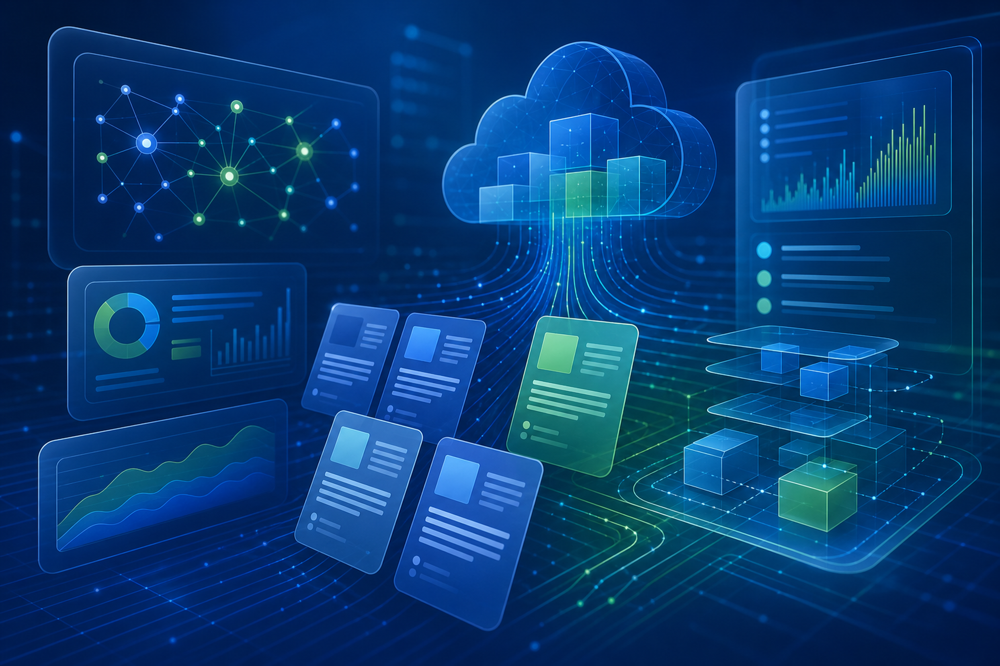
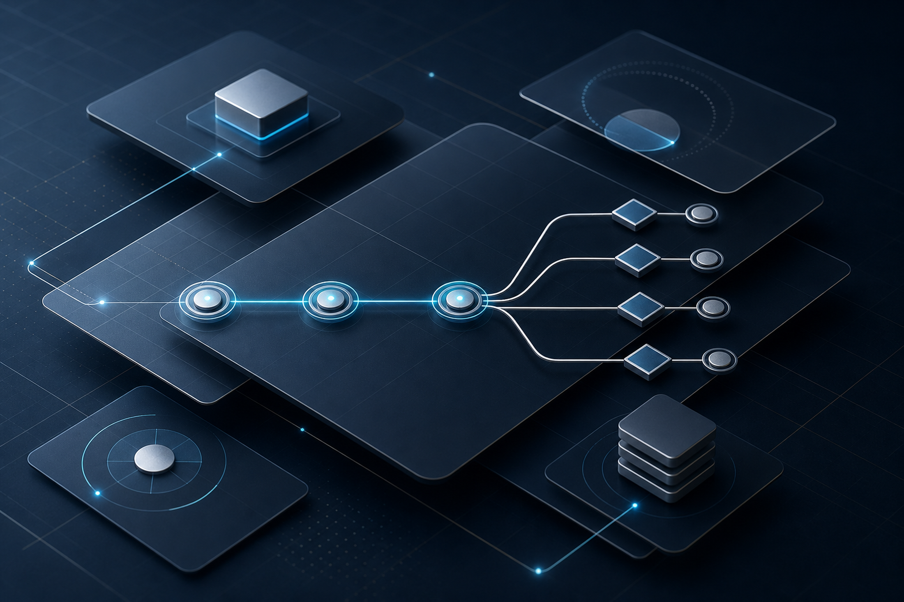

인공지능 및 기계학습 · 2026-06-16
Siemens 사례: 에이전트형 워크플로로 레거시 코드 현대화
Siemens는 소프트웨어 개발 생명주기 자동화를 위한 Knowledge Fabric을 구축해 구현 부담을 줄인 사례를 공개했습니다.
원문 보기구글 클라우드 일일 기술 전략 브리핑 · 2026-06-17
이번 실행에서 신규 저장한 문서를 중심으로 작성했습니다. 이 글은 실제 수집된 구글 클라우드 블로그 문서 3건을 바탕으로 관찰 사실과 기업 검토 포인트를 분리해 정리했습니다.

인공지능 및 기계학습 · 2026-06-16
Siemens는 소프트웨어 개발 생명주기 자동화를 위한 Knowledge Fabric을 구축해 구현 부담을 줄인 사례를 공개했습니다.
원문 보기아이덴티티 및 보안 · 2026-06-17
Google은 전 세계 SIEM 플랫폼을 대상으로 한 2026 IDC MarketScape 평가에서 리더로 선정됐다고 발표했습니다.
원문 보기데이터베이스 · 2026-06-16
Atlas가 수백 개의 판매자 PostgreSQL 데이터베이스를 Google Cloud SQL Enterprise Plus로 이전해 운영 부담을 줄인 사례입니다.
원문 보기새 기능이 기존 데이터·보안·운영 체계와 맞물릴 경우 분석 자동화, 탐지 정확도, 워크로드 성능 개선을 기대할 수 있습니다. 단, 이번 수집 문서에서 직접 확인된 범위 안에서만 우선 검토해야 합니다.
지원 리전, 가격, 미리보기 여부, 권한 모델, 데이터 보존 정책, 기존 서비스와의 호환성은 원문과 공식 문서에서 추가 확인이 필요합니다.
국내 조직은 규제·감사·보안 검토 절차가 강한 경우가 많으므로 기술 장점과 함께 접근제어, 로그, 데이터 위치, 운영 책임 경계를 동시에 확인해야 합니다.
| 영역 | 관찰된 사실 | 의사결정자 검토 포인트 |
|---|---|---|
| 인공지능 | 수집 문서에서 인공지능 또는 에이전트 관련 기능이 언급된 경우 업무 흐름 내 연결성이 중요합니다. | 모델·도구 호출 권한, 감사 로그, 데이터 사용 조건을 확인해야 합니다. |
| 데이터 | 데이터 처리와 분석 서비스는 성능·상호운용성·관리 편의성이 함께 비교됩니다. | 기존 저장소, 쿼리 엔진, 비용 구조와의 호환성을 검증해야 합니다. |
| 보안 | 보안 관련 발표는 기능 도입보다 탐지·대응·권한 체계와 연결될 때 의미가 큽니다. | 역할 기반 권한, 사고 대응 프로세스, 외부 감사 요건을 함께 점검해야 합니다. |
| 확인 필요 | 수집 데이터만으로 출시 상태나 지역별 가용성을 단정할 수 없는 항목이 있습니다. | 도입 전 원문 문서와 공식 제품 문서를 대조해야 합니다. |

이 문서는 수집된 구글 클라우드 블로그와 로컬 지식형 Markdown만을 근거로 작성했습니다. 데이터가 부족한 항목은 확인 필요로 표시했으며, 내부 제품·조직·고객사와의 연결은 사용자가 요청하지 않았으므로 포함하지 않았습니다.
이미지 생성 방식: GPT Image 2 이미지 생성 성공